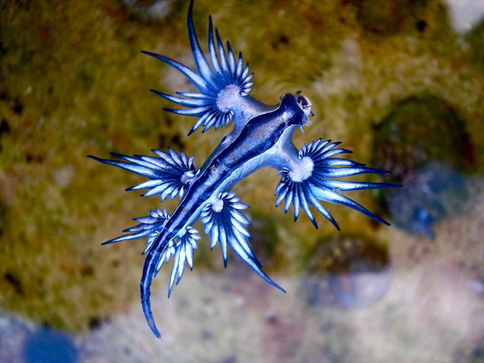

Blue Dragon
Brightly colored, yet poisonous this marine slug possesses the ability to swallow its prey’s venom and repurpose it for its benefit.
- Scientific Name: Glaucus Atlanticus
- Other Names: blue angel, blue glaucus
- Average Length: 3 centimeters
- Average Lifespan: 1 month - 1 year
- Habitat: temperate and tropical waters
When born, the blue dragon isn’t venomous on its own. As it matures, it feeds on larger pelagic preys such as the Portuguese man o’ war. The blue dragon is immune to the man o’ wars’ nematocysts (stinging cells). When feeding, it simultaneously ingests the nematocysts and stores them in their own stingers called cerata. Floating upside down, its blue color camouflages the creature in the water. Due to this striking coloration and wing-like cerata, it earned itself the name the “Blue Dragon”.